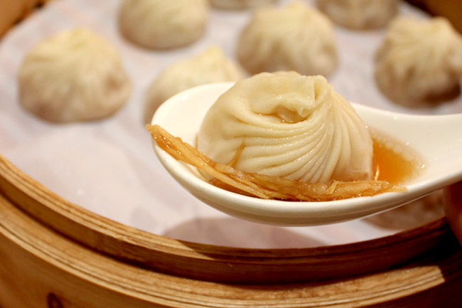
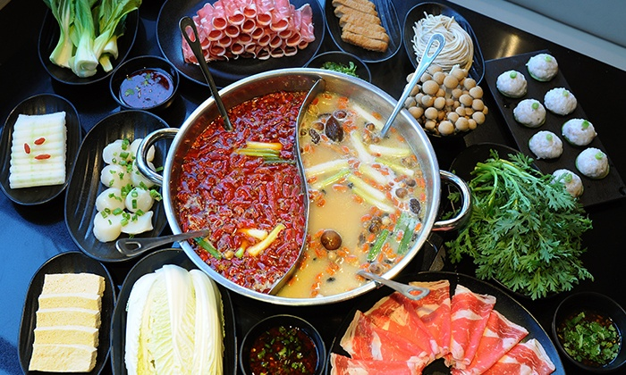

Din Tai Fung was founded in Taipei, Taiwan in 1958 as a cooking oil retail shop. In 1972, it transitioned into a full fledged restaurant specializing in soup dumplings and noodles.
At this Mongolian chain eatery, diners cook meat & vegetables in broth at the table.
